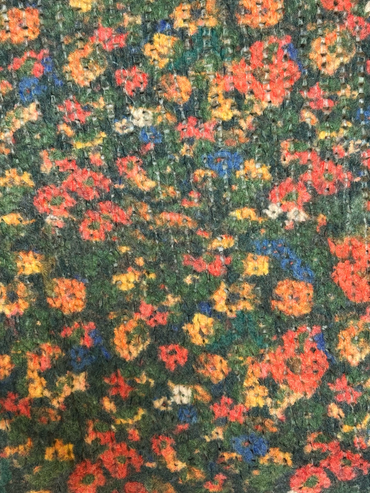

A STUDY OF EVERYDAY TEXTURES
옷의 표면에서 모은 일상의 조각들.
가까이 들여다보면익숙한 옷에도 새로운 표정이 있다.
MATERIAL / DAILY RECORD

ABOUT THE ARCHIVE
매일 하나의 옷이나 패션 아이템을 가까이 들여다봅니다. 색과 소재, 손끝에 닿는 질감과 그 물건에 얽힌 이야기를 표본 카드에 모읍니다.
분류 기호는 세탁 기호의 형식을 빌려, 옷을 고르고 대하는 나만의 기준을 나타냅니다.